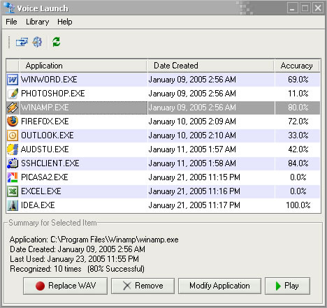

Voice Launch:
Voice Launch is a speech recognition program that will recognize and launch a selection of at least fifteen words. The user will need to record a number of phrases and associate each phrase with an application. The expected accuracy is equal or greater than 80%. To launch an application via voice, user's phrase is recorded and passed to the recognition thread. The recognition thread will find the most similar item from the library by comparing the recently recorded phrase to all other templates in the library. The user is prompted with a confirmation dialog prior to launching any application. If the found application is not what the user desired then he or she can click or say no and the next best application is chosen. If after three attempts the correct application was not found, then no application is launched.
